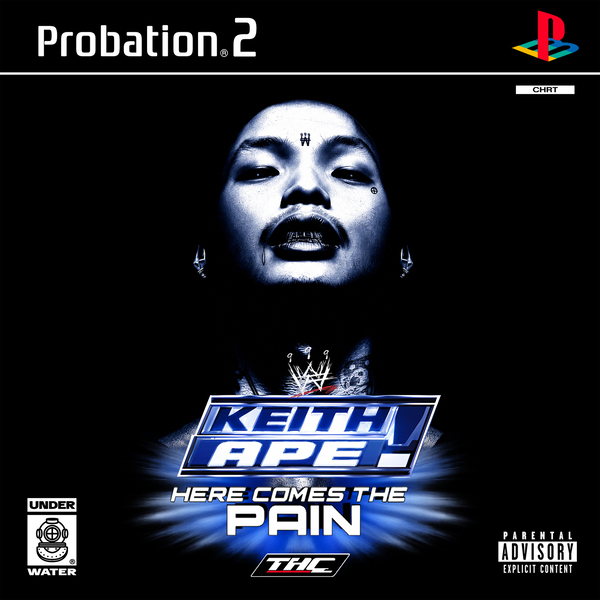
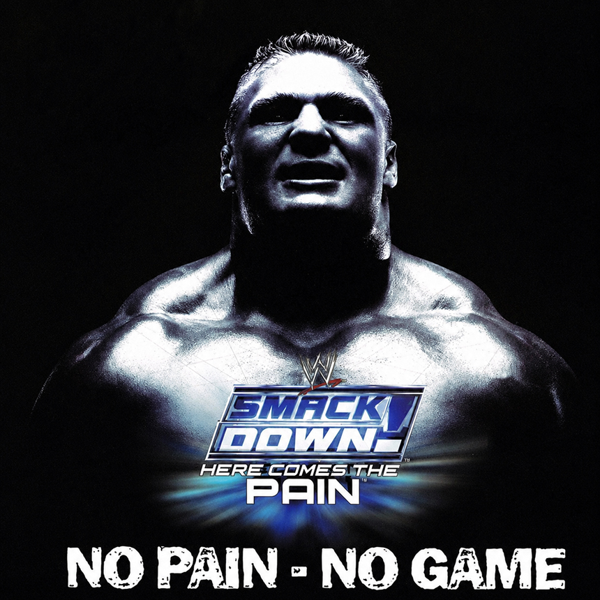
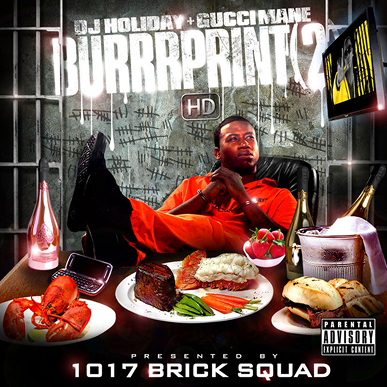
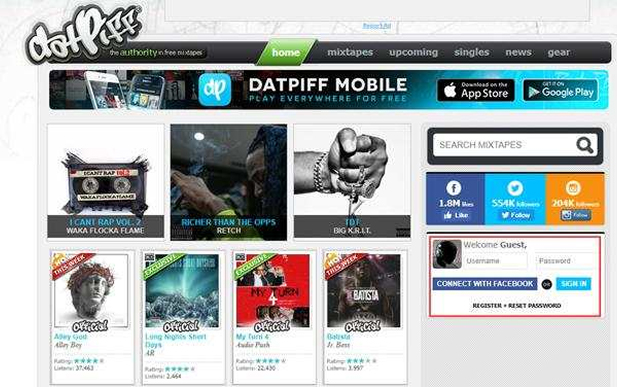
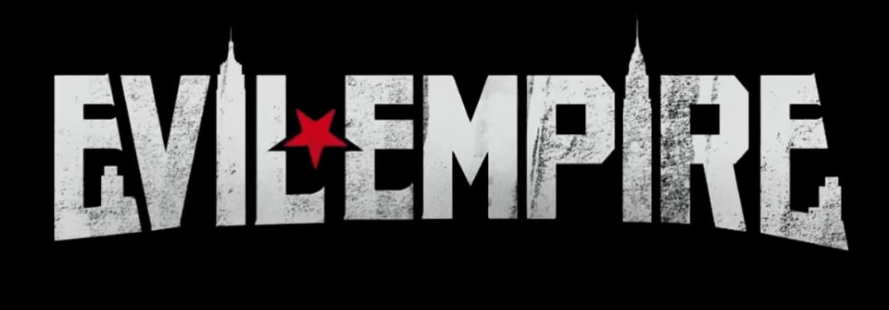
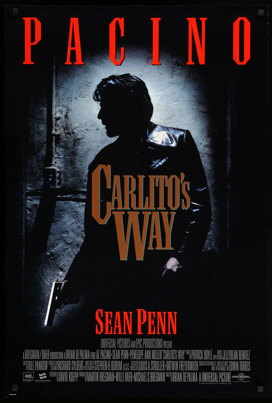
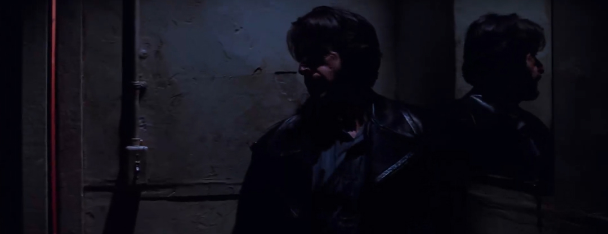
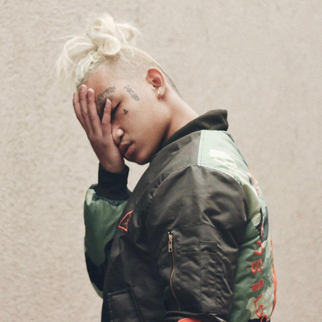
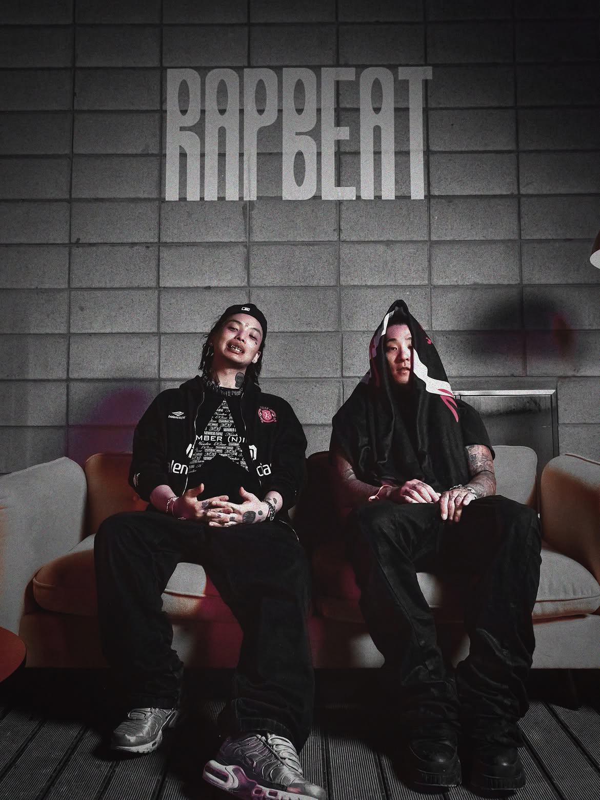
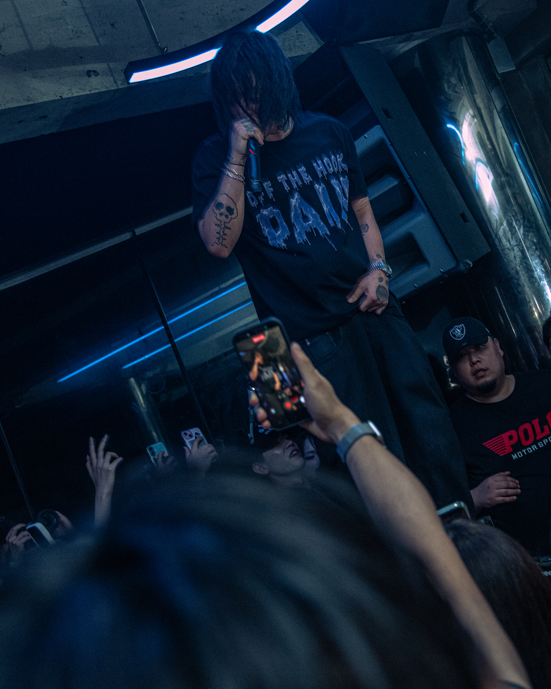

안녕하세요 키스 에이프님 인터뷰에 참여해주셔서 감사합니다! 자기소개 부탁드리겠습니다.
안녕하세요. 오랜만에 믹스테이프 [HERE COMES THE PAIN!]으로 돌아온 Keith Ape입니다.
최근 일상생활은 어떻게 지내고 계신지 궁금합니다.
지난 7월 출소 후 법정교육, 봉사 활동 등 병행하며 로우키(lowkey)하게 지내며 믹스테이프 작업을 진행하고 있었습니다.

키스 에이프 님의 새로운 믹스테이프인 [HERE COMES THE PAIN!]입니다. 작품에 대한 간단한 소개 부탁드리겠습니다.
[HERE COMES THE PAIN!]은 제가 겪은 고통 그 자체를 최대한 있는 그대로 음악에 담아낸 작품이에요. 이 고통을 청자분들도 있는 그대로 받아들여 주셨으면 좋겠다는 마음으로 만든 프로젝트입니다. 제가 지난 몇 년간 겪었던 힘든 일들을 이야기하며 연민이나 공감을 바라는 프로젝트는 아니에요. 간단히 이야기하자면, 그냥 "내 고통을 느껴봐."입니다.

<WWE SmackDown! Here Comes the Pain> 표지를 패러디한 커버아트도 재밌습니다. 실제로 두번째 트랙 이름도 "SMACKDOWN"이고 "WTF" 뮤직비디오에서도 인게임 영상이 삽입되었는데요, 본 게임의 전체적인 이미지를 이번 믹스테이프의 컨셉으로 삼은 이유가 궁금하네요.
어렸을 때 해외 믹스테이프에서 "HERE COMES THE PAIN!"이라는 말을 얼핏 들었던 기억이 있어요. 다시 찾아보다가 <WWE SmackDown! Here Comes the Pain>이 생각났고, 고통이라는 것을 게임처럼 재밌고 유쾌하게 풀어내는 게 좋겠다고 생각한거죠.
그냥 "나 힘들었으니까 이해해줘" 이렇게 풀어내는 건 별로였거든요.
"이게 내 고통이니까 너희도 한번 느껴보셈." 이런 무드가 저랑 잘 맞았어요(웃음).
이번 작품에서 말하는 'Pain'은 단순히 고통만을 의미하는 것 같지는 않았습니다.
나에게 고통은 원동력이면서도, 동시에 저를 억압하는 절망감이기도 해요. 서로 상반된 두 감정이 혼합된 상태라고 생각합니다. 이 땅을 살아가는 많은 남자들이 한 번쯤 느껴봤을 감정이라고 생각해서, 그 점을 표현하고 싶었습니다.
인터뷰 준비를 위해 믹스테이프를 미리 들어볼 수 있었는데요. 지금과 비교해보면 트랙리스트 순서와 곡 제목이 꽤 달라졌습니다. 마지막까지 트랙 배치와 이름을 고심하신 것 같은데.
원래는 "WTF"나 "WINNER"같은 트랙에서 'W'를 '₩'으로 넣고 싶었는데, 막상 이렇게 하려다 보니 플랫폼마다 걸리는 부분도 있는 등 어려움이 있었어요.
그리고 "GET OUTTA MY WAY (RIP JUGG)"는 원래 계획에 없던 곡이었습니다. "PLUS+PLUS=?"는 프리스타일 느낌으로 작업한 곡이었는데 녹음하고 다시 들어보니까 마지막에 'GET OUT MY WAY, RIP' 라는 엔딩을 아웃트로에 깔게 되어서 갑자기 Jugg Nino랑 작업한 노래랑 자연스럽게 이어지는 지점이 있더라고요. 처음부터 의도한 건 아닌데, 만들고 보니까 연결이 돼 있었어요.
원래는 이번 믹스테이프를 저 혼자 다 만들려고 했는데, 마음 한켠에 Jugg Nino한테 개인적으로 빚 아닌 빚 같은 게 있었어요. 예전에 "GET OUT MY WAY"를 발표하겠다고 한 약속도 있었고요. 그래서 그냥, "그러면 이걸 여기에 넣자." 해서 마지막에 넣게 됐습니다.


개인적으로 이번 작품에서 2000년대 후반 ~ 2010년대 초반 Southern Trap의 향이 짙게 느껴졌습니다. 이번 믹스테이프에서 구현하고팠던 사운드의 방향성이 궁금합니다.
이번 믹스테이프 사운드는 제가 징역을 가기 전부터 하고 싶었던 사운드였어요. [On! the Run] 이후부터 계속 생각하고 있던 프로젝트였고요. '믹스테이프 사운드'라고 부르는, 옛날 Brick Squad나 DatPiff에서 듣던 그런 사운드 말이죠. 예전부터 그런 느낌을 제 방식대로 한번 제대로 구현해보고 싶었고, 이번 믹스테이프에서 그걸 보여준 거예요.
앞서 이야기한 시기는 믹스테이프 문화가 활발하기도 했죠. [HERE COMES THE PAIN]이 믹스테이프 포맷으로 발매된 것도 해당 시기에 대한 오마주인 것일까요?
완전 맞습니다. 딱 바로 그겁니다(웃음). PS2가 활발히 돌아갔고, 그 시대에 대한 향수도 있었죠. 전체적인 비주얼을 잡아준 Miraimono(@miraimono)가 한국에서 이런 비주얼에 특화되어 있어서 재밌게 작업했습니다.
작품의 메인 프로듀서로서 다시 한 번 GAKA님, 123madeit님과 호흡을 맞췄습니다. 두 프로듀서의 사운드가 보여주는 매력은 무엇이라고 생각하시나요?
GAKA는 이번 믹스테이프에서 거의 전체적인 총괄 프로듀서 역할을 해줬어요. 한국 힙합 신에서 진짜 오래 활동한 동생이고, 그 친구도 제가 하려는 것에 한마음이 돼서 제대로 같이 할 수 있었어요.
123madeit은 한국에서 그 시대 믹스테이프 사운드를 지금 제일 잘 표현하는 프로듀서라고 생각해서 계속 눈여겨보고 있었어요. 이번 기회를 통해 같이 작업하고, 이 친구의 이름을 더 알릴 수 있게 돼서 저도 기쁘고요. 그리고 Hollywood J 같은 해외 프로듀서들도 계속 눈여겨보고 있었습니다. 제가 원하는 사운드에 맞는 사람들이면 국내든 해외든 그냥 같이 작업하고 싶었어요.
키스 에이프 님이 이번 작품에서 가장 구현하고 싶었던 것은 당시의 '사운드'였는지, 아니면 그 시대의 '문화'였는지도 궁금하네요.
사운드도 사운드지만, 사실 문화 자체를 가져오고 싶은 마음이 더 컸어요. 그래서 믹스테이프 DJ 호스팅도 Evil Empire한테 직접 받은 거고요. 당시의 믹스테이프 문화를 흉내내는 데서 그치는 것이 아니라, 2026년에 다시 제대로 보여주고 싶다는 생각이 있었습니다.

말씀하신 것처럼 미국 힙합의 믹스테이프 문화를 대표하는 'Evil Empire'가 이번 작품의 호스트로 참여한 것도 인상 깊습니다. Evil Empire에 대해 간단히 소개 부탁드릴게요.
Evil Empire는 French Montana의 믹스테이프는 물론, Trap-A-Holics나 Hoodrich 같은 DJ들이랑 같이 그 시대 믹스테이프 문화에서 한 획을 그은 사람이에요. 저한테는 '그 시절 믹스테이프' 하면 떠오르는 목소리 중 하나죠. "YUH DIG" 때부터 인연도 있었고, Evil Empire도 다시 자기 커리어를 이어가려는 타이밍이었어요. 저 역시 2026년에 믹스테이프 문화를 제대로 다시 가져오고 싶었고요. 그래서 이번에는 그냥 이 사람이 호스팅해야 된다고 생각했습니다.


영화 <칼리토(Carlito's Way)>의 작중 대사 역시 믹스테이프의 시그니처 사운드로 활용되고 있죠. 앨범의 인상을 공고히 만들어주는 느낌입니다.
<칼리토> 자체가 힙합에 영향도 많이 준 영화고, 알 파치노가 "Here comes the pain!"이라고 하는 그 장면이 그냥 마음에 들었어요. 거기다 똑같은 문구가 레슬링 게임에도 쓰였잖아요. 영화, 힙합, 레슬링, 그리고 지금 제 상황까지 그냥 모든 게 딱 들어맞았어요.
결국 제가 하고 싶었던 말도 그냥 그거예요. "내 고통을 느껴봐. 끼이야야야야."
이전에 공개한 [THE X-MAS IS MINE 2 PREVIEW]의 "THE ORCA-a Underwater Sub"에서도 같은 소스('Here Comes the Pain' 대사)가 활용되었는데, 이번 믹스테이프를 언제부터 구상하셨는지도 궁금하네요.
사실 이번 믹스테이프도 [THE X-MAS IS MINE] 고통 시리즈의 연장선이라고 생각해요. 원래 이런 프로젝트를 1년 단위로 계속 시리즈처럼 내고 싶었거든요.
첫 트랙 'HERE COMES THE PAIN! (Aw, Shit! Here We Go Again!)'처럼, 이번 믹스테이프에서는 다시 한 번 시동을 거는 듯한 키스 에이프님의 에너지가 강하게 느껴졌습니다. 과거의 자신과 비교했을 때 어떤 점이 가장 달라졌다고 생각하시나요?
예전에는 그냥 음악만 잘하면 된다고 생각했어요. 음악적인 나만 중요했고, 그 외의 것들은 별로 신경쓰지 않았던 것 같아요. 근데 이제는 일도 그렇고, 운동선수처럼 좀 더 프로의 마인드로 임해야겠다고 생각이 많이 바뀐것 같아요. 감정에 휘둘리지 않고요.
진짜 바닥을 찍고 나서 여기서 그냥 포기할 건지 말 건지 고민도 많이 했어요. 근데 이럴 때 찡찡거리기에는 아직 나한테 한 번 더 좋은 기회가 있다고 생각했어요. ㅈ까. 그냥 한 번 더 해보자. 그게 원동력이었던 것 같아요.
"FUCK YALL BEEN DOIN ON!"에서 비와이 님의 "배있길 보우"에 참여한 오케이션 님의 가사(난 이제 최고 따위엔 집착 안하려 그래)가 떠오르는 '나도 관심 없어 1위' 라인도 재밌습니다. 1위라는 자리 대신 지금의 키스 에이프 님이 노리고 있는 것은 무엇인지 궁금하네요.
어릴 때부터 제가 look up 하던 아티스트들도 한때는 다 최고를 노렸겠죠. 결국 최고가 되지 못했어도, 혹은 최고의 자리에서 내려온 뒤에도 계속 작업물을 내는 모습이 되게 인상적이었어요. 저도 여기에 자극을 많이 받았고요.
이제는 1위를 못 하더라도 그냥 계속 곡을 내고 내 길을 찾는 게 맞다고 생각해요. 이걸 업으로 삼을 거라면 결국 내 길을 계속 가야 된다는 거잖아요. 1위든 성적이든 그게 주가 되면 안 되는 것 같아요. 그냥 계속 작업하고, 계속 내고, 세상에 계속 밀어 넣는 것. 지금은 그게 더 의미 있다고 생각해요.

"GET OUTTA MY WAY (RIP JUGG)" 는 2020년 사망한 Jugg Nino님과 함께한 트랙입니다. 두 분의 인연이 어떻게 이어져왔는지, Jugg Nino님은 어떠한 뮤지션이었는지 소개 부탁드리겠습니다.
저와 Jugg Nino 둘 다 아시아에서 온 아티스트잖아요. 저는 한국에서 왔고, 걔는 베트남에서 왔고. Parlay Pass 형을 통해서 알게 됐는데, 서로 공감되는 점도 많았고, 당시 저와 다르게 레이블 없이 혼자서 강한 아시아 래퍼의 길을 가던 그가 멋있다고 생각했어요. 그래서 더 애정이 갔던 친구예요.
게다가 제가 본 동양 래퍼들 중에서는 현지에서 직접 봤을 때 미국 본토 시장에 제일 어필할 수 있는 아티스트 중 하나라고 생각했어요. 근데 그렇게 세상을 떠나서 많이 아쉬웠고요. 예전에 제가 이 곡을 내겠다고 약속한 게 있었어요. 아무 때나 그냥 내고 싶지는 않았고, 최적의 타이밍에 제대로 내고 싶었어요. 이번 믹스테이프가 그 타이밍이라고 생각했습니다.
마지막 트랙 "THE PROUD SINNER"는 특히 흥미로웠습니다. 초기 제목이 "WINNER"였다는 점도 그렇고, 가사 측면에서 [THE X-MAS IS MINE 2]의 흔적도 발견할 수 있었습니다. 특히 지금 키스 에이프 님의 상황을 가장 직설적으로 드러낸 곡이기도 합니다. 이 곡을 마지막 트랙으로 배치한 이유와, "THE PROUD SINNER"라는 제목에 담고 싶었던 의미를 함께 말씀해 주실 수 있을까요?
WINNER 보다는 'PROUD SINNER'가 그 표현이 저의 더 솔직한 상태입니다. 좀 더 자조적이기도 하고 곡의 제목 전체적으로 나만의 위트를 담으려 했어요. 한 마디로 "난 승자지만 그전에 자랑스러운 죄인이다!"
청자들이 이번 [HERE COMES THE PAIN]을 어떻게 감상하면 좋을까요? 집중해 주었으면 하는 포인트가 있다면 말씀 부탁드리겠습니다.
"나 힘들었어, 힘들었던 이야기 들어줘" 이런 식으로 받아들이지 않았으면 좋겠어요. 차라리 제가 겪은 고통을 그대로 즐겨줬으면 좋겠어요. 마치 스맥다운 게임 하는 것처럼요. 이게 내 고통이니까, 그냥 내 고통 한번 직간접적으로 느껴보고 즐겨봐. 그게 이 믹스테이프를 듣는 제일 맞는 방법인 것 같습니다.

얼마전 랩비트 페스티벌에서 브라이언 체이스 님과 함께 오랜만에 코홀트로서 공연을 가졌습니다. 소감이 궁금하네요.
너무 값진 경험이었어요. 진짜 아쉬운 건 오케이션이 불가역적인 이유로 같이 무대에 오르지 못했다는 점이죠. 그래도 앞으로 같이 무대에 설 기회가 있을 거라고 믿고 있으니까, 저도 그 무대를 기대하고 있습니다. 여러분도 기대해주세요.

얼마전에는 그레인하우스에서 릴리즈 파티를 가졌죠. 저도 그 자리에 있었는데 분위기가 장난 아니었습니다. 당시 어떤 기분이셨나요?
오랜만에 가진 공연이었음에도 너무 호응 잘해주셔서 잘 놀았습니다! 중간에 cdj가 꺼지는 사고도 있었는데(웃음) 재밌는 기억으로 남았습니다.
[HERE COMES THE PAIN] 이후의 행보도 궁금합니다. 앞으로 어떠한 활동을 계획하고 있으신지?
이 믹스테이프 이후에 크리스마스 프로젝트를 준비하려고 해요. 원래 매년 계속 하고 싶었던 계획이고요. 그리고 올해 초 88라이징과 정리가 되고 국내에 새로 준비 중인 레이블에도 들어가게 됐습니다. 이제는 그냥 계속 작업하고 솔직한 음악들 계속 낼 생각이에요.
인터뷰가 마무리되었습니다. 마지막으로 팬들과 HAUS OF MATTERS 독자분들께 하고 싶은 말씀 부탁드리겠습니다.
나의 고통을 함께 느껴주시고 즐겨주시길! 그리고 앞으로 고통이 아닌 기쁨으로 가득찬 모습으로 다가갈 거니까 기대해주십시오.
인터뷰에 참여해주신 키스 에이프님께 감사드립니다!